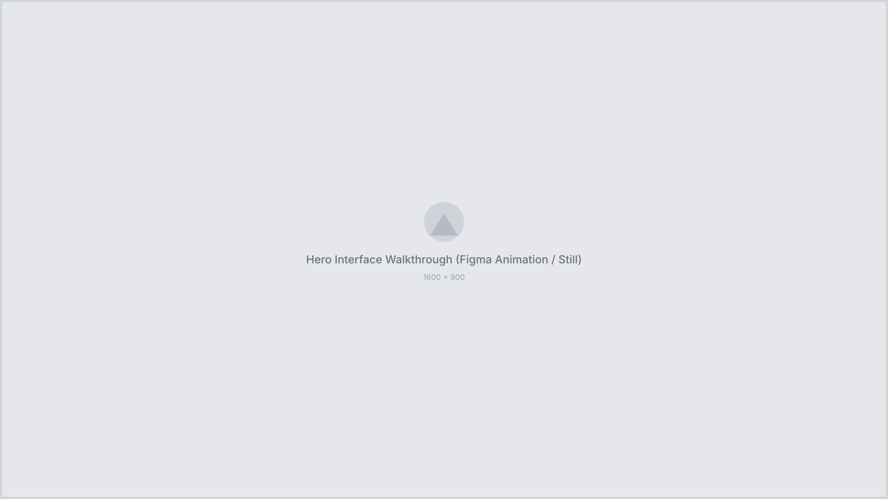
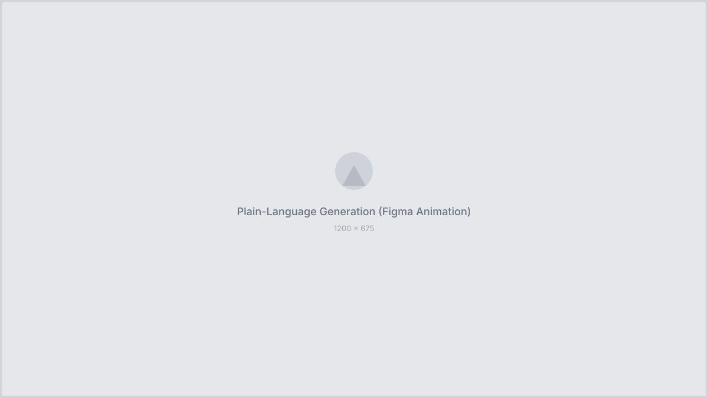
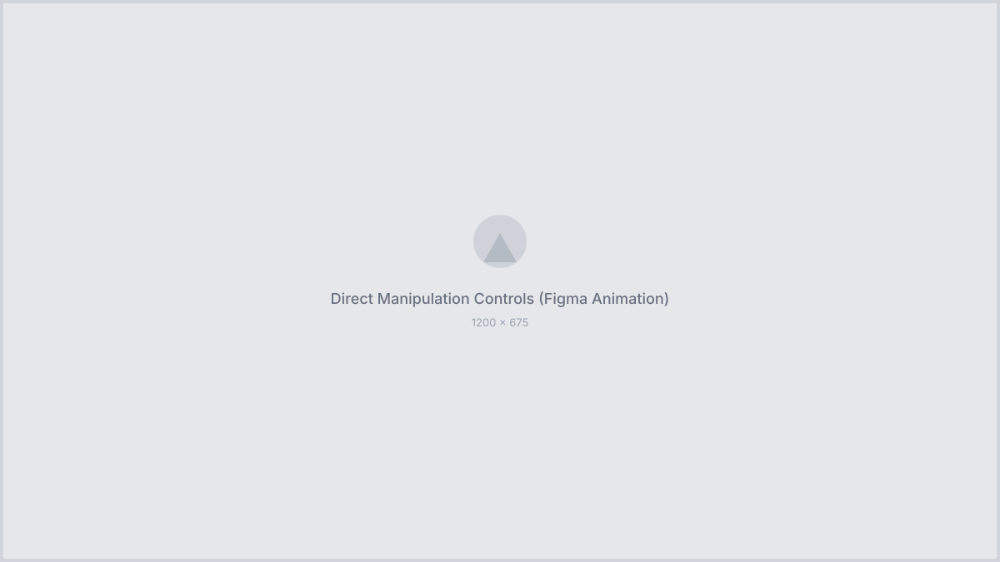
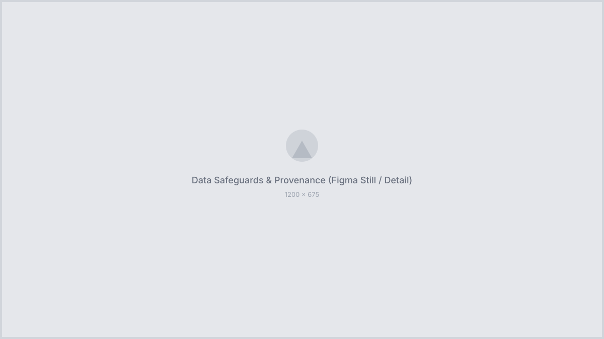
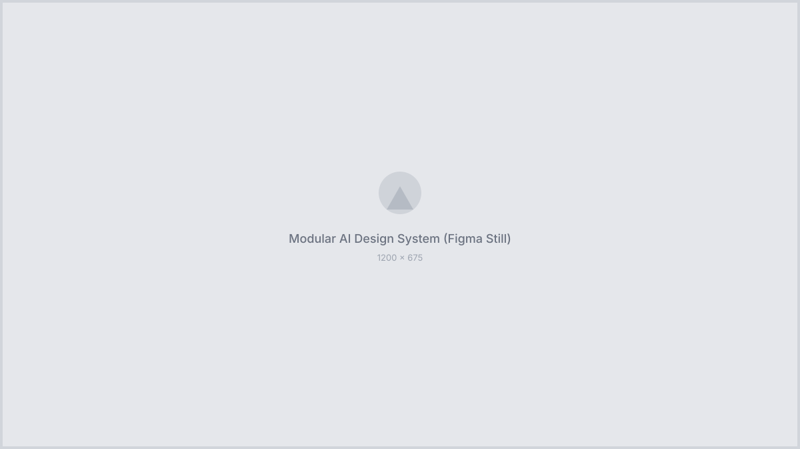

Generative AI for Geospatial Humanitarian & Policy Intelligence
I worked on United Nations GeosightAI (built as part of the UNTechOver 2026 initiative) to bring conversational AI to UNICEF’s GeoSight geospatial platform. I presented this work directly to the United Nations Office of Information and Communications Technology (OICT) and to Google.
Policy analysts and field teams rely on data from UNICEF, the World Bank, and UN Data Commons to decide where aid and funding need to go first. Pulling subnational indicators together—like crossing out-of-school rates with safe water access and drought risk across 47 counties—usually takes hours of hunting through fragmented catalogs.
We built an AI copilot that lets decision-makers ask broad questions in plain language and get a live, multi-layered map and priority index in seconds. When mapping child vulnerability, AI hallucinations aren’t just annoying—they’re dangerous. My focus as the UX/UI designer was making the AI grounded, inspectable, and easy to steer.

Broad queries like “Show me child vulnerability in the Horn of Africa” are ambiguous across dozens of potential metrics. Instead of guessing and running a heavy pipeline on the wrong data, the copilot clarifies intent and surfaces candidate datasets first.
I separated the conversational chat from noisy developer logs—replacing raw tool dumps with clean narrative milestones and a collapsible step inspector—and designed an interactive Indicator Swap Drawer so analysts can compare and swap layers on the fly without starting over.
Design features:
+ Predictive Data Grounding: Type-ahead entity
chips for Indicators, Hazard Overlays, and Admin Regions
+ Indicator Swap Drawer: Flyout comparing
custodian agencies, subnational coverage (e.g., 47/47 counties),
and live choropleth previews
+ Disentangled System Activity: Narrative
milestone cards, collapsible step-trace reasoning, and calm
waiting states
+ Bidirectional Deep-Linking: Clicking AI layer
cards opens the corresponding native GeoSight panel
Analysts mapping a single indicator (like Primary Out-of-School Rate) often miss complementary signals from other agencies, such as WASH or climate vulnerability. At the same time, non-technical decision-makers want established frameworks (like UNICEF’s CCRI methodology) rather than writing composite formulas from scratch.
I combined semantic catalog recommendations, background statistical correlations, and one-click composite templates into a guided workflow:
Guided intelligence:
+ Related Signals Panel: Semantic vector
matching suggests complementary layers (e.g., Safe Water in
Schools, Poverty Rate, Drought Risk) for one-click overlay
+ Auto-Insight Correlations: Background Pearson
correlation (r) banners highlight hidden relationships
across subnational regions with split-viewer comparison
+ Analytical Recipes: Curated composite index
templates (Standard Burden, Equity-Weighted,
Climate-Resilient) that load layers and rank counties
automatically

Humanitarian allocations require verifiable numbers. When global aggregates (like Google / UN Data Commons) differ from local GeoSight or national census feeds, analysts need to see the delta immediately rather than trusting a black box.
Trust architecture:
+ Agreement Badges: Visual
PASS, REVIEW, and
UNVERIFIED status tokens on active layers
+ Cross-Source Comparison Popover: Side-by-side
breakdown of reported values, time periods, deltas, and provenance
URLs
+ Primary Source Toggle: Direct control to
switch between global and local agency feeds
+ Verified Attribution: Explicit credit across
UNICEF SDMX, UN Data Commons, and GeoSight layers

Insights on a screen need to travel into policy meetings and funding proposals without losing their audit trail or mutating as underlying datasets update.
I designed sharing and export workflows built for institutional accountability—allowing teams to freeze exact data states or generate decision-ready policy memos in one click.
Reporting & governance:
+ Immutable Snapshots (SHA-256): Share dialog
distinguishing Live Editable Links from
Frozen Audit Snapshots
+ Frozen View & Forking: Audit banner
confirming snapshot timestamp with a one-click “Fork &
Edit” action
+ Executive Briefing Export: 1–2 page
PDF/Memo layout with core KPI cards, static hotspot map, top 5
highest-risk areas table, and source methodology footer
